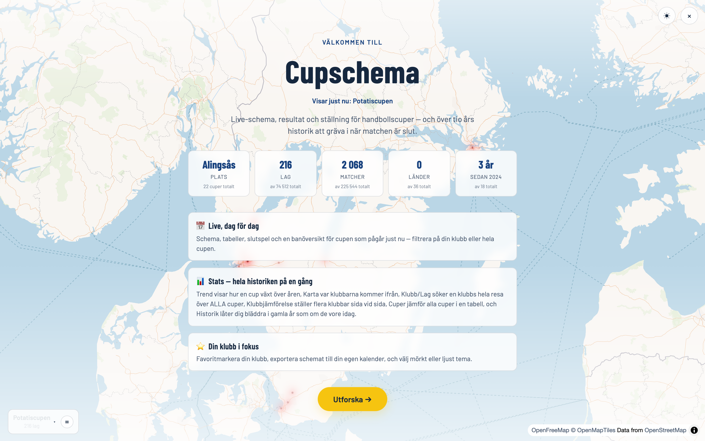
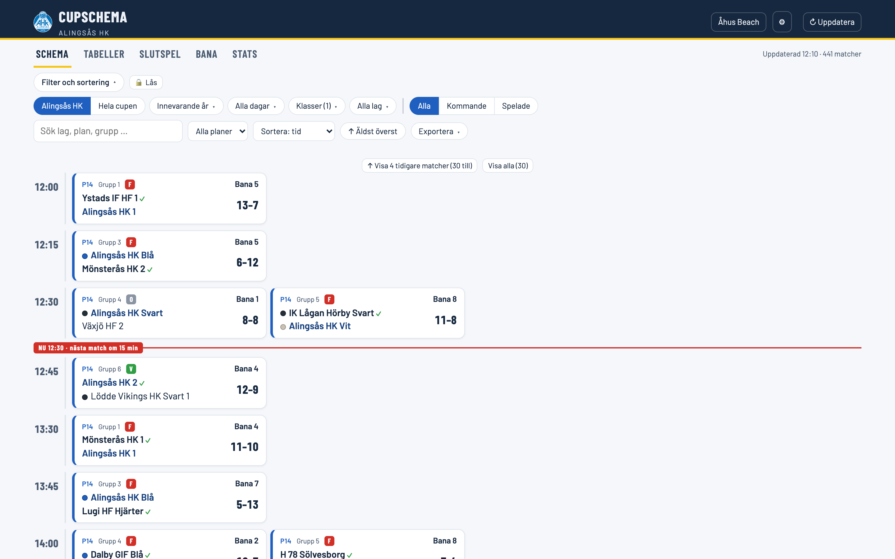
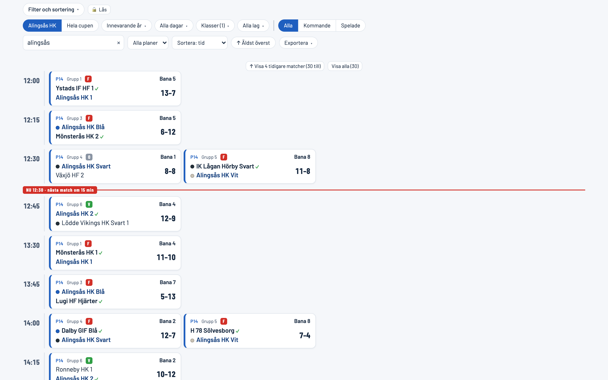
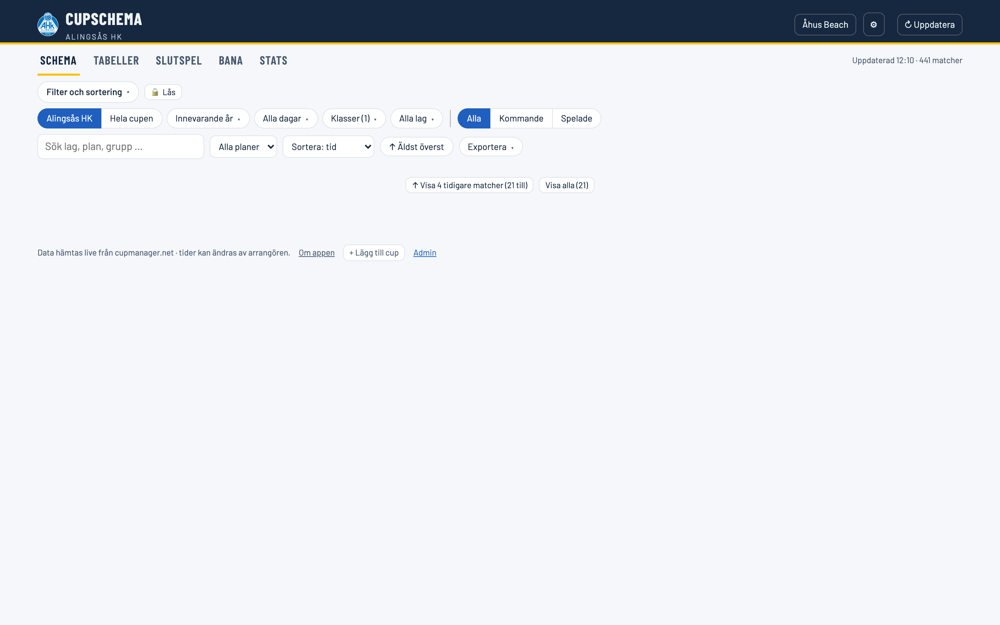
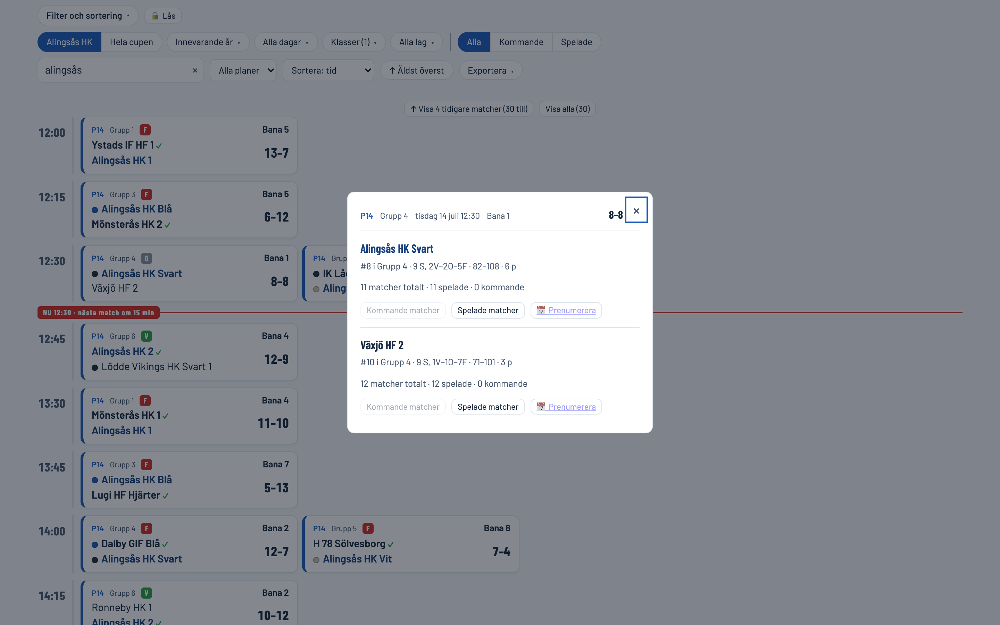
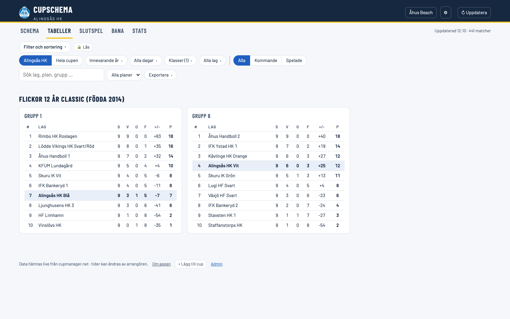
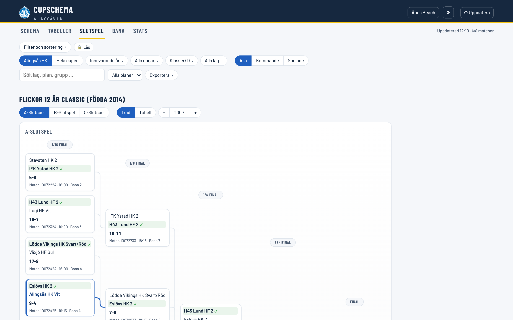
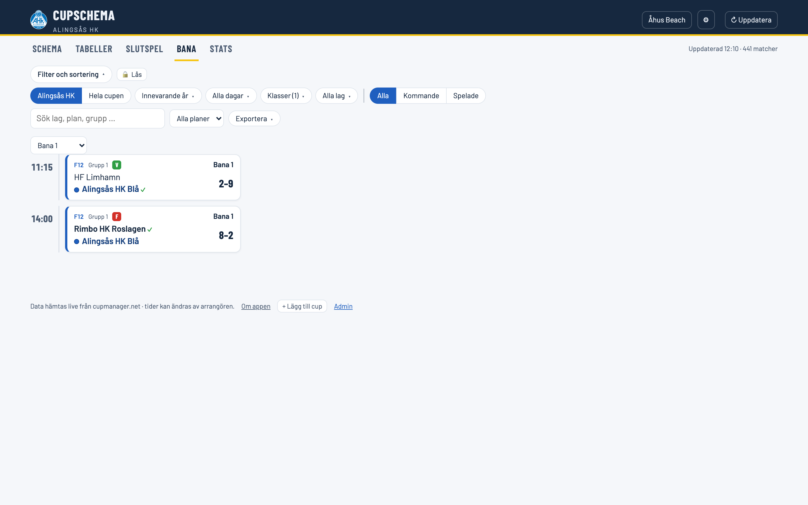
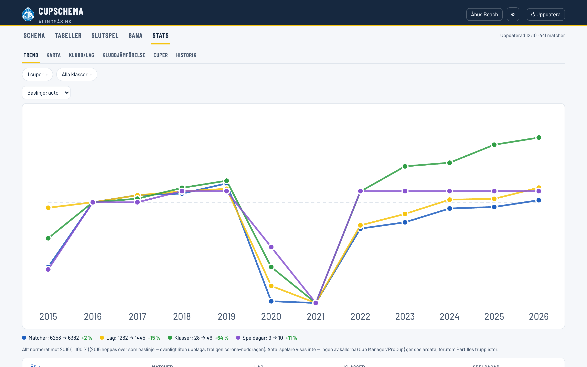
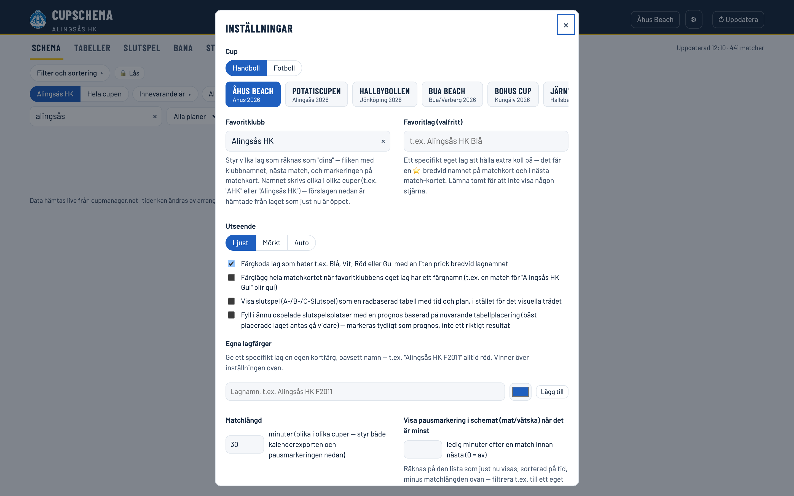

Allt om cupen — på ett ställe
Spelschema, resultat, tabeller och slutspel för hundratals handbollscuper — tusentals lag och över tio års historik, live i din webbläsare. Den här guiden visar allt appen kan göra — sök ovan eller bläddra nedan.
01 Vad är Cupschema?
Cupschema samlar spelschema, resultat, tabeller och slutspel för massor av handbollscuper på ett och samma ställe — från stora Åhus Beach och Partille Cup till mindre lokala cuper — alltid uppdaterat, snyggt på mobilen och gjort för att du snabbt ska hitta din match.
Datan hämtas live från cupernas egna system (Cup Manager och ProCup), så du behöver aldrig leta runt på olika arrangörssajter. Du kan filtrera fram exakt de matcher du bryr dig om, prenumerera på dem i din kalender, följa tabeller och slutspelsträd, och till och med bläddra i över tio års cuphistorik.
Appen är byggd av och för Alingsås HK och startar därför med Alingsås HK som förvald klubb — men den fungerar lika bra för vilken klubb som helst. Sätt din egen klubb som favorit i Inställningar, så anpassas hela appen efter dig.
- Ingen inloggning — öppna länken och kör.
- Fungerar offline som app på hemskärmen (se Installera).
- Delbart — varje vy har en egen länk du kan skicka vidare.
Bråttom? Hoppa till Snabbstart — tre steg så följer appen just din klubb.
02 Varför cupschema?
Varje cup har sin egen sajt, och de ser alla olika ut. Cupschema samlar dem bakom ett gränssnitt: knapparna sitter på samma ställe, slutspelsträdet fungerar likadant och siffrorna räknas ut på samma sätt — vare sig du står i Åhus, på Heden eller i en liten hall i Alingsås.
Samma app, alla cuper
- Du behöver aldrig lära om. Går du från Åhus Beach till Göteborg Beachfestival till Göteborg Cup känner du igen dig direkt — samma flikar, samma filter, samma sätt att hitta ditt lag.
- Din klubb i centrum. Sätt favoritklubb och favoritlag en gång, så följer de med mellan alla cuper och år.
- Allt är delbart. Varje vy har en egen länk — skicka exakt det du tittar på till laget eller föräldragruppen.
Sådant arrangörens sajt sällan ger dig
- Prognos i slutspelsträdet. Ännu ospelade slutspelsplatser kan fyllas med en gissning utifrån hur tabellerna ser ut just nu — tydligt märkt som prognos, aldrig som resultat. Se Slutspel.
- Inbördes möten uträknade. Står två lag lika räknar appen ut det inbördes mötet åt dig, direkt i tabellen.
- Förra årets facit. Hur gick det för ditt lag i samma cup i fjol? Historik låter dig bläddra i över tio års upplagor som om de vore idag.
- Karta med hallarnas adresser. Se var klubbarna kommer ifrån och var hallarna ligger — adressen följer dessutom med ut i kalenderexporten, så du kan trycka på den och få vägbeskrivning.
- Kalender på ditt sätt. Exportera precis de matcher du filtrerat fram, eller prenumerera på ett lag så att ändrade tider uppdateras av sig själva. Se Exportera.
Allt räknas ut i appen, i din webbläsare, utifrån cupens egen data — inget konto, ingen inloggning, inga annonser.
Så används appen
Några typiska sätt att använda cupschema — kanske känner du igen dig i något av dem:
- Föräldern på läktaren. Filtrerar fram sitt barns lag, lägger hela helgens matcher i kalendern med påminnelse 30 minuter före, och slipper leta i ett papperschema mellan matcherna.
- Ledaren som planerar helgen. Ser alla klubbens lag samtidigt, hittar luckorna mellan matcherna med pausmarkeringen, och delar en länk till rätt vy i lagets chatt.
- Den som kör bil. Kollar hallens adress på kartan, exporterar matcherna så adressen hamnar i kalendern, och navigerar dit direkt från telefonen.
- Statistiknörden. Jämför hur cuper vuxit över åren i Trend, ställer klubbar sida vid sida, och gräver i vilka som vunnit vad sedan 2008.
- Speakern eller DJ:n. Exporterar matchlistan till kalkylark eller rakt in i ProCue DJ.
Ny här? Snabbstart ställer in appen efter din klubb på tre steg.
03 Snabbstart
Tre snabba steg och appen är inställd på dig.
- Välj cup. På datorn: Byt cup uppe till höger. På telefonen: tryck på cupnamnet i rubriken, eller öppna Filter och tryck på cup-brickan.
- Sätt din favoritklubb. Öppna Inställningar (kugghjulet på datorn, Mer på telefonen) och skriv in din klubb. Nu markeras dina lag och du får ett Nästa match-kort. Stjärnmärk gärna just ditt barns lag så karusellen inte blandar in andra lag i klubben.
- Filtrera fram dina matcher. Under Filter väljer du en klass, ett lag eller en plan. Vill du bara se ditt lag? Välj det under Lag.
Appen kommer ihåg dina val till nästa gång — och adressfältet uppdateras så att du kan spara eller dela exakt den vyn.
04 Så funkar gränssnittet
Tre delar att känna igen: rubriken högst upp, flikarna, och filterraden.

Rubriken
- Cup-knappen (klubbnamn/cupnamn) — öppnar cup-väljaren.
- ⚙ Inställningar — favoritklubb, tema, färger, matchlängd med mera.
- ↻ Kontrollera senaste — hämtar den senast publicerade gemensamma snapshotten (visar Kontrollerar … under tiden).
Flikarna
- Schema — matchlistan med tidslinje och Nästa match.
- Tabeller — gruppställningar.
- Slutspel — slutspelsträd (A/B/C).
- Bana — allt som spelas på en vald plan.
- Statistik — historik och statistik (dyker upp när cupen har historik att visa).
Flikar som inte är relevanta för en viss cup döljs automatiskt — en ProCup-cup utan slutspelsdata visar t.ex. ingen Slutspel-flik.
På mobilen ligger menyn under rubriken
På en telefon sitter navigeringen direkt under rubriken, inte längst ned. Den första raden är Filter · Aktuellt · Statistik · Mer. Scrollar du nedåt fälls den ihop till en rad som visar var du är och vad som är filtrerat — tryck på den för att fälla ut menyn igen, eller på Minimera för att hålla den hopfälld.
- Aktuellt öppnar Schema, Tabeller, Slutspel och Bana.
- Filter öppnar en rad med cup, klubb/hela cupen, år, dagar, klasser och lag. En liten siffra på filterknappen säger hur många filter som är aktiva. Fler val fäller ut extra filter; Rensa tar bort dem.
- Mer rymmer Dela, Inställningar, Hjälp och Om.
- Väljarna öppnas som ark under menyn. Dra i handtaget i nederkanten för att göra arket högre eller lägre.
Klickar du dig vidare från ett matchkort — på en hall, ett lag eller en grupp — lägger sig en rad överst som säger vad du tittar på och tar dig tillbaka med ett tryck.
05 Nästa match-kortet
Högst upp i Schema visas din klubbs nästa match — med nedräkning, plan, klass och väder. Är flera på gång blir kortet en karusell.
Pilar ‹ › och prickarna bläddrar mellan upp till fem kommande matcher · svep på mobilen · kortet roterar även av sig självt var sjätte sekund
- Nedräkning som tickar live: om 15 min, om 1 h 20 min …
- Pågår nu med en pulserande prick när matchen är igång.
- ⭐ bredvid ditt utvalda favoritlag (se Inställningar).
- Klicka på kortet för full matchinfo. Minimera det med triangeln om du vill.
Kortet visar bara kommande klubbmatcher. När cupen är slutspelad finns inga fler att räkna ner till — då är kortet borta och hela fokus ligger på resultaten i tidslinjen.
06 Tidslinjen & NU-linjen
Schemat är en tidslinje: matcher grupperade efter tid, med en röd NU-linje som visar var i dagen du är just nu.

- Auto-scroll: vid öppning hamnar du direkt vid NU-linjen — mitt i händelsernas centrum. Det sker bara en gång, så det stör inte när du bläddrar sedan.
- Visa tidigare matcher: äldre matcher är hopfällda bakom knappar som ”↑ Visa 4 tidigare matcher (21 till)” och ”Visa alla (21)”. Hur många som visas per klick ställs in i Inställningar.
- Pausmarkering: slår du på det får du en ”🥤 … dags för mat/vätska”-rad i luckor mellan matcher (se Inställningar).
- Ordning: chipen ↑ Äldst överst / ↓ Nyast överst vänder listan.
07 Matchkorten — läs dem på en sekund
Varje kort är packat med snabb information. Så här tolkar du det:
- Rubrikrad: klass (t.ex. P14), grupp/omgång, V/O/F-märket, väderikon för kommande matcher, och banan (klickbar — visar allt på den planen).
- Lagen: ditt lag är blåmarkerat; vinnaren får ✓; färgnamn (Blå/Röd/Gul/Vit) får en liten prick. Klicka ett lagnamn för en snabb lagvy.
- Resultatrutan: live-resultat med LIVE-märke medan matchen spelas, annars slutresultat eller ”mot” för kommande.
- Klicka var som helst på kortet för fullständig matchinfo.
Har din klubb flera lag (Blå, Vit, Röd …)? Slå på färgkodning i Inställningar så syns de direkt — eller färglägg hela matchkortet i lagets färg.
Hur långt bakåt listan börjar
Spelade matcher visas inte allihop på en gång — listan börjar där du troligen vill titta, och knappen ↑ Visa fler tidigare matcher hämtar resten. Var den börjar beror på vad du gör:
- Pågår cupen just nu vill du se de par senaste matcherna och sedan allt som återstår. Antalet ställer du i Inställningar.
- Bläddrar du i en avslutad cup (mer än en vecka sedan sista matchen) är hela poängen det som varit — då visas ungefär tjugo åt gången, och du laddar fler allt eftersom.
Inget hämtas om från servern när listan växer; allt finns redan. Knappen visar bara mer av det.
08 Filter & sortering
Filterraden är nyckeln till att hitta exakt rätt matcher. Allt du väljer speglas i adressfältet så att vyn går att spara och dela.

Filtren
- Din klubb / Hela cupen — begränsa till dina lag eller se allt.
- Alla / Kommande / Spelade — matchstatus.
- Dagar, Klasser och Lag — sök- och flervalsbara listor (klasser har snabbval Flickor/Pojkar). Det du kryssat i lägger sig överst i listan.
- Sök lag, plan, grupp … — fritextsök med förslag. Avancerat:
&= OCH,/eller,= ELLER. - Alla planer — filtrera på en bana.
Klasser väljs på födelseår
En klass heter olika saker olika år. Samma barn spelar F11 ett år, F12 nästa och F13 året därpå — så ett filter på åldersklassen följer inte laget, det följer åldern.
Därför grupperas klassväljaren på födelseår. Väljer du F2011 och tittar på flera år får du F11, F12, F13 och F14 — alltså samma årskull genom åren, inte fyra olika lag.
Laddas ett nytt år in i efterhand fylls valet på av sig själv med det årets klass för samma kull. Du behöver inte gå tillbaka och kryssa i på nytt.
Sortering (i Schema)
Välj Sortera: tid / klass / plan / resultat / mål. I tidsordning kan du dessutom vända listan med Äldst/Nyast överst.
🔒 Lås är smart när du t.ex. följer en hel klass men vill kika in på ett enskilt lag utan att tappa ditt grundfilter. Lås — utforska — klicka på chipen igen för att låsa upp.
Låset finns på dator. På mobilen behövs det inte: där tar orienteringsraden dig tillbaka till din vy när du klickat dig vidare.
09 Klicka på en match — eller ett lag
Ett klick öppnar djupare information: tabellplacering, form, tidigare möten och genvägar.

- Klicka på hela kortet → matchdialogen med statistik för båda lagen, ev. trupp och Tidigare möten.
- Kommande / Spelade matcher → hoppar till en filtrerad schemavy för det laget.
- 📅 Prenumerera → lägg lagets matcher i din egen kalender (uppdateras automatiskt för Cup Manager-cuper).
- Klicka bara på ett lagnamn (på kortet) → en lättviktig lagvy utan att öppna hela dialogen.
När du hoppat iväg till ett lags matcher dyker chipen ”← Tillbaka till din vy” upp — ett klick återställer exakt det filter du hade.
10 Tabeller
Gruppställningar med dina lag framhävda — och klickbara lagnamn.

- Välj en eller flera klasser i filtret för att visa deras grupper.
- Klicka ett lagnamn för att hoppa till lagets fullständiga schema.
11 Slutspel
Följ vägen till finalen i ett visuellt slutspelsträd — A-, B- och C-slutspel som flikar.

- A- / B- / C-Slutspel som flikar när det finns flera träd.
- Träd / Tabell — byt till en radbaserad tabell med tid och plan (kan även göras permanent i Inställningar).
- Zooma med − 100% +, och dra för att panorera i trädet.
- Filtrerar du flera klasser dyker en Välj klass-meny upp så du tar en i taget.
Slå på slutspelsprognos i Inställningar så fylls ännu ospelade platser i med ett kvalificerat gissning utifrån tabellläget — tydligt märkt som prognos, aldrig blandat med riktiga resultat.
12 Bana
Sitter du vid en plan och vill veta vad som händer just där? Bana-fliken visar allt på en vald bana.

- Välj bana i Välj bana …-menyn.
- Samma filter som resten av appen gäller (t.ex. bara din klubb, eller en viss klass).
- De senast spelade matcherna visas alltid (antal ställs in i Inställningar), plus alla kommande.
Karta och adress
Ligger hallarna utspridda över en hel kommun räcker det inte med ett namn. Har arrangören lagt in var hallarna ligger visar Bana-fliken dem på en karta, med gatuadress och ort under.
- Hallar som delar adress grupperas ihop — Lindesberg Arena 1 och 2 är samma hus, och visas som en punkt.
- Adressen följer med ut i exporterna, så den hamnar i kalendern och kan navigeras till. Se Exportera.
Alla cuper har inte lagt in adresser. Saknas de visas bara hallens namn, precis som förut.
13 Statistik & historik
Hela cuphistoriken på ett ställe — hur cupen vuxit, var lagen kommer ifrån, och hur din klubb gått genom åren.

Statistik har flera undervyer (dyker upp när det finns data att visa):
- Trend — hur en cup vuxit över åren.
- 🏆 Vinnare — mästarna genom åren: din klubbs troféskåp, årets mästare (guld/silver/brons per klass för en vald cup och år) och vinnartoppen (evig topplista över flest A-slutspelsguld). Din egen klubb markeras alltid, och du kan klicka ett trofékort för att öppna just det slutspelsträdet.
- Kalender — en Gantt-översikt över hela säsongen: varje cup som en stapel på en årsaxel, så du ser när de olika cuperna spelas. Cuper vars datum ännu inte spikats visas med en streckad preliminär stapel (≈) baserad på förra årets datum. Klicka en cup för att hoppa till dess schema.
- Karta — var klubbarna kommer ifrån, på en riktig karta.
- Klubb/Lag — sök en klubbs resa genom alla cuper.
- Klubbjämförelse — ställ flera klubbar sida vid sida.
- Cuper — alla cuper i en jämförbar tabell.
- Historik — bläddra i ett gammalt år som om det vore idag.
14 Byt cup — och lägg till egna
Alla klubbens cuper finns i väljaren, och du kan lägga till fler själv.

- Byt cup: cup-knappen i rubriken, eller cup-raden i Inställningar.
- Lägg till en cup (för alla): via Admin-sidan (kräver lösenord + GitHub-token).
- Lägg till en cup (bara åt dig): + Lägg till cup i sidfoten — klistra in värd och Tournament-ID från cupmanager.net. Sparas i din webbläsare.
Öppna cupens resultatsida på cupmanager.net, visa sidans källkod och sök efter tournamentId — ett åttasiffrigt tal.
15 Uppdatering & live
Appen håller pågående cuper färska automatiskt — utan att slösa på avslutade eller ännu inte startade.
- Pågående cup: uppdateras tyst ungefär var tredje minut medan fliken är öppen.
- Framtida cup: hämtas om då och då tills den drar igång.
- Avslutad cup: hämtas inte om i onödan — resultaten står ju fast.
- ↻ Kontrollera senaste hämtar den senast publicerade gemensamma snapshotten.
Texten ”Uppdaterad 12:10 · 441 matcher” uppe till höger visar när datan senast hämtades. Klicka på den för att se exakt vilka matcher som räknas.
Appen sparar schemat i webbläsaren och använder även färdigbyggda ögonblicksbilder, så att även förstabesöket laddar direkt i stället för att vänta på cupens system.
16 Exportera & dela
Ta med dig schemat dit du vill — eller skicka exakt din vy till en lagkompis.
Exportera
Exportera-knappen i filterraden sparar precis det du ser (filtrerat och sorterat):
- 📅 Kalender (.ics) — importera till Google/Apple/Outlook-kalendern. Matchlängden styrs i Inställningar.
- 📊 Kalkylark (.xlsx) och CSV — öppnas i Excel/Sheets.
- 🎧 Till ProCue DJ — se nedan.
- JSON och XML för den som vill jobba vidare med datan.
Bana och adress följer med. Finns hallens gatuadress i cupen hamnar den i kalenderhändelsens platsfält — då kan du trycka på den i telefonen och få vägbeskrivning direkt. Kalkylark och CSV får egna kolumner för hall, adress och ort.
Påminnelse. I exportpanelen väljer du om kalendern ska larma 15 min, 30 min, 1 timme, 2 timmar eller 1 dygn före matchstart. Standard är ingen påminnelse.
Skapa en egen kalender för cupen först. Lägger du hundra matcher rakt in i din vanliga kalender och sedan ångrar dig, måste du plocka bort dem en och en. Skapar du i stället en ny kalender som heter t.ex. Åhus Beach 2026 och importerar dit, raderar du hela kalendern i ett svep när cupen är slut — och kan dessutom dölja den med en kryssruta när du vill se din vanliga vecka i fred.
- iPhone/iPad: Kalender → Kalendrar längst ned → Lägg till kalender. Importera sedan .ics-filen och välj den nya kalendern.
- Android/Google: skapa kalendern på calendar.google.com (Inställningar → Lägg till kalender) och importera .ics-filen till den under Importera och exportera.
- Outlook: Kalender → Lägg till kalender → Skapa tom kalender, importera sedan filen dit.
Prenumerera i stället för att importera
En exporterad .ics-fil är en ögonblicksbild — ändrar arrangören en matchtid efteråt vet din kalender inget om det. Vill du att ändringar ska följa med automatiskt, prenumerera i stället: klicka upp ett lag (i schemat eller en tabell) och välj 📅 Prenumerera. Kalendern hämtar då om lagets matcher med jämna mellanrum, så ny tid, ny dag eller ny hall dyker upp av sig själv.
- Cup Manager-cuper (de flesta) har en livetjänst hos arrangören, så prenumerationen fungerar för alla lag.
- ProCup- och Gothia-cuper saknar en sådan tjänst. Där finns prenumeration bara för din favoritklubbs egna lag, via filer som uppdateras i samma takt som resten av cupens data.
- En prenumererad kalender hamnar som en egen kalender i telefonen — samma fördel som tipset ovan, och den går att ta bort i ett svep när cupen är över.
Kort sagt: importera när du vill ha matcherna en gång, prenumerera när du vill att de ska hålla sig uppdaterade.
Till ProCue DJ
Sköter du musiken i en hall kan du hämta matchlistan rakt in i ProCue DJ. Knappen 🎧 Till ProCue DJ (kopiera) lägger urvalet i urklipp — klistra in i ProCues Inspring-flik. Den laddar alltså inte ner någon fil.
Exporten följer ditt filter, precis som allt annat här. Det vanliga upplägget för en hallansvarig:
- Välj cupen.
- Välj dag — eller flera.
- Välj hallen du ansvarar för under Alla planer.
- Kopiera till ProCue.
Du behöver inte välja klass eller lag för det här. En vald plan räcker för att schemat ska visas — så du ser exakt vad du är på väg att exportera innan du kopierar.
Dela din vy
Adressfältet speglar alltid ditt filter och din sortering. Kopiera länken — mottagaren får exakt samma vy, ända ner till vald klass, lag, dag och ordning.
17 Inställningar — gör appen till din
Öppna med ⚙ i rubriken. Här skräddarsyr du appen efter dig och din klubb.
- Favoritklubb — styr vilka lag som är ”dina” (fliken, Nästa match, markeringar). Samma klubb heter olika i olika cuper — förslagen hjälper dig.
- Favoritlag — ett specifikt lag som får en ⭐ extra.
- Utseende — Ljust / Mörkt / Auto.
- Färgkoda lag — liten prick för Blå/Vit/Röd/Gul, eller hela matchkortet i lagets färg.
- Egna lagfärger — ge ett visst lag en fast färg oavsett namn.
- Slutspel som tabell och slutspelsprognos — se Slutspel.
- Matchlängd — styr kalenderexport och pausmarkering.
- Pausmarkering — visa mat/vätska-luckor i tidslinjen.
- ”Visa fler tidigare”-antal och senast spelade i Bana/slutspelstabell — finjustera hur mycket som visas.
- Om och hjälp — genvägar hit till manualen och till appens övriga sidor.
- Appversion — vilken version du kör, med knappen Töm cache och ladda om bredvid. Använd den om appen känns fastlåst i en gammal version.
18 Installera som app (PWA)
Lägg Cupschema på hemskärmen så öppnas den som en riktig app — även offline för det du redan sett.
- iPhone/iPad (Safari): Dela-knappen → Lägg till på hemskärmen.
- Android (Chrome): menyn ⋮ → Installera app / Lägg till på startskärmen.
- Dator (Chrome/Edge): installations-ikonen i adressfältet.
Appskalet (design och kod) cachas för offline-bruk; själva matchdatan behöver förstås nät för att uppdateras.
19 Vanliga frågor
Varför ser jag inget schema?
Schemat visas först när du valt något att titta på. Öppna Filter och sortering och välj en klass, ett lag eller en plan — vilket som räcker. Har din klubb inga matcher i cupen erbjuds knappen Visa hela cupen.
Dagar räknas inte på egen hand: en enda speldag kan vara hela cupen, och då hade du fått flera hundra matcher i klump.
Jag är hallansvarig — kan jag få bara min hall?
Ja. Välj cup, sedan dag och hall under Alla planer. Ingen klass eller lag behövs. Därifrån når du alla exporter, inklusive 🎧 Till ProCue DJ — se Exportera.
Vart tog knapparna vägen på mobilen?
De ligger i menyn under rubriken: Filter, Aktuellt, Statistik och Mer. Inställningar, Dela, Hjälp och Om sitter under Mer. All filtrering ligger under Filter — siffran på knappen säger hur många filter som är aktiva, och Rensa tar bort dem. Scrollar du nedåt fälls menyn ihop till en rad; tryck på den för att fälla ut den igen.
Mitt lag heter olika i olika cuper — spelar det roll?
Nej. Sätt din favoritklubb så känner appen igen stavningsvarianter (AHK, Alingsås HK …). Förslagen i Inställningar är hämtade från den cup som är öppen.
Stämmer tiderna?
Tiderna kommer direkt från arrangören och kan ändras med kort varsel. Appen visar alltid det senast hämtade — tryck ↻ Kontrollera senaste (på telefonen: Mer → Inställningar) om du vill vara helt säker.
Kan jag följa flera lag samtidigt?
Ja — välj flera lag i Alla lag-listan, eller håll dig i klubbläge så ser du alla dina lag. Ett enskilt favoritlag får dessutom en ⭐.
Är slutspelsprognosen ”riktig”?
Nej, det är en kvalificerad gissning utifrån tabelläget för platser som ännu inte är avgjorda. Den är tydligt märkt som prognos och blandas aldrig ihop med spelade resultat.
Kostar det något / behöver jag logga in?
Nej och nej. Cupschema är gratis och kräver ingen inloggning.